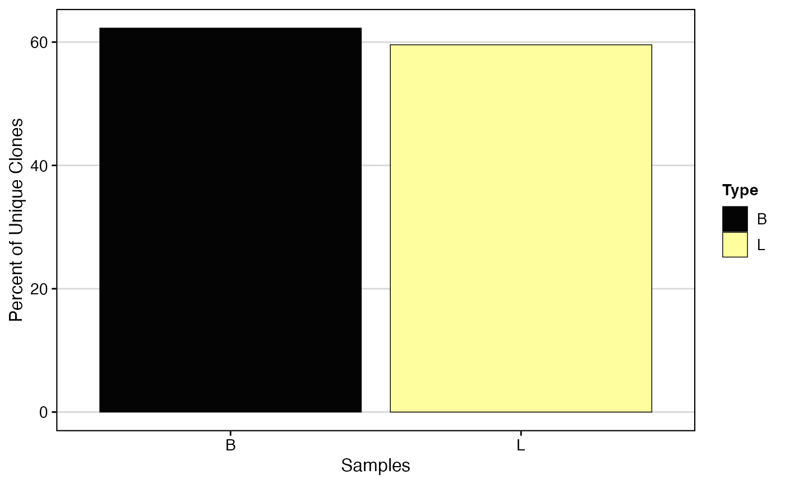
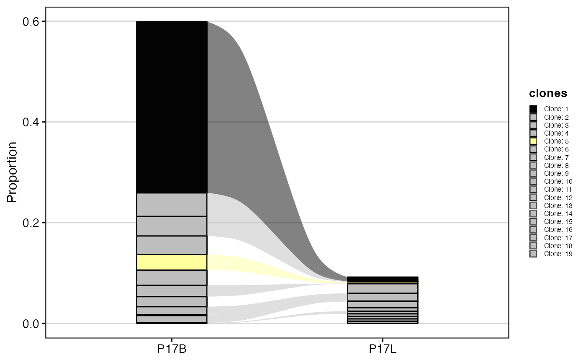

Basic Clonal Visualizations
Compiled: March 19, 2025
Source:vignettes/articles/Clonal_Visualizations.Rmd
Clonal_Visualizations.RmdclonalQuant
The first function to explore the clones is
clonalQuant() to return the total or relative numbers of
unique clones.
scale
- TRUE - relative percent of unique clones scaled by the total size of the clonal repertoire.
- FALSE - Report the total number of unique clones (default).
chain
- “both” for combined chain visualization
- “TRA”, “TRB”, “TRD”, “TRG”, “IGH” or “IGL” to select single chain
clonalQuant(combined.TCR,
cloneCall="strict",
chain = "both",
scale = TRUE)
Another option here is to be able to define the visualization by data
classes. Here, we used the combineTCR() list to define the
Type variable as part of the naming structure. We can
use the group.by to specifically use a column in the
data set to organize the visualization.
clonalQuant(combined.TCR, cloneCall = "gene", group.by = "Type", scale = TRUE)
clonalAbundance
We can also examine the relative distribution of clones by abundance.
Here clonalAbundance() will produce a line graph with a
total number of clones by the number of instances within the sample or
run. Like above, we can also group.by this by vectors within the contig
object using the group.by variable in the function.
clonalAbundance(combined.TCR,
cloneCall = "gene",
scale = FALSE)
clonalAbundance() output can also be converted into a
density plot, which may allow for better comparisons between different
repertoire sizes, by setting scale = TRUE.
clonalAbundance(combined.TCR, cloneCall = "gene", scale = TRUE)
clonalLength
We can look at the length distribution of the CDR3 sequences by
calling the lengtheContig() function. Importantly, unlike
the other basic visualizations, the cloneCall can only
be “nt” or “aa”. Due to the method of
calling clones as outlined above, the length should reveal a multimodal
curve, this is a product of using the NA for the
unreturned chain sequence and multiple chains within a single
barcode.
chain
- “both” for combined chain visualization
- “TRA”, “TRB”, “TRD”, “TRG”, “IGH” or “IGL” to select single chain
clonalLength(combined.TCR,
cloneCall="aa",
chain = "both") 
clonalLength(combined.TCR,
cloneCall="aa",
chain = "TRA",
scale = TRUE) 
clonalCompare
We can also look at clones between samples and changes in dynamics by
using the clonalCompare() function.
samples
- Can be used to isolate specific samples based on the name of the list element
graph
- “alluvial” - graph imaged below
- “area” - graph by area of the respective clone
top.clones
- The top number of clones to graph, this will be calculated based on the frequency of the individual sample. This can also be left blank.
clones
- Can be used to isolate specific clone sequences, ensure the call matches the sequences you would like to visualize.
highlight.clones
- Specifically color certain clones, other clones will be greyed out.
relabel.clones
- Simplify the isolated clones to numerical designations to allow for a tidier visualization
clonalCompare(combined.TCR,
top.clones = 10,
samples = c("P17B", "P17L"),
cloneCall="aa",
graph = "alluvial")
We can also choose to highlight specific clones, such as in the case of “CVVSDNTGGFKTIF_CASSVRRERANTGELFF” and “NA_CASSVRRERANTGELFF” using the highlight.clones parameter. In addition, we can simplify the plot to label the clones as clones 1:19.
clonalCompare(combined.TCR,
top.clones = 10,
highlight.clones = c("CVVSDNTGGFKTIF_CASSVRRERANTGELFF", "NA_CASSVRRERANTGELFF"),
relabel.clones = TRUE,
samples = c("P17B", "P17L"),
cloneCall="aa",
graph = "alluvial")
Alternatively, if we only want to show specific clones, we can use the clones parameter.
clonalCompare(combined.TCR, clones = c("CVVSDNTGGFKTIF_CASSVRRERANTGELFF", "NA_CASSVRRERANTGELFF"),
relabel.clones = TRUE, samples = c("P17B", "P17L"), cloneCall = "aa", graph = "alluvial")
clonalScatter
clonalScatter() will organize two repertoires, quantify
the relative clone sizes, and produce a scatter plot comparing the two
samples.
x.axis and y.axis
- Names of the list element to place on the x-axis and y-axis - so for example “P18B” and “P18L”
dot.size
- “total” to display the total number of clones between the x- and
y-axis
- Name of the list element to use for size calculation
graph
- “proportion” for the relative proportion the clone represents across
all clones
- “count” for the total count of clones by sample
clonalScatter(combined.TCR,
cloneCall ="gene",
x.axis = "P18B",
y.axis = "P18L",
dot.size = "total",
graph = "proportion")